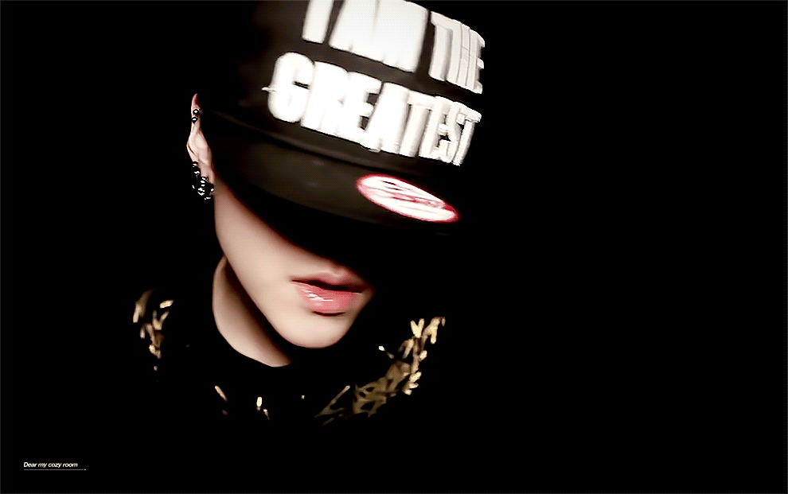
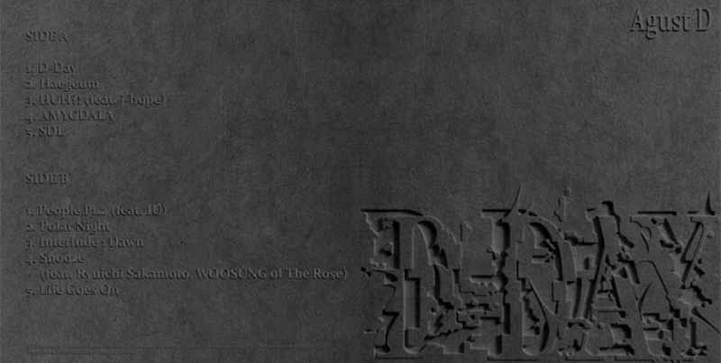

Min Yoongi
Min Yoongi
¿Quién es?
Min Yoongi, cuyo nombre artístico es Suga, nació el 9 de marzo de 1993 en Daegu, Corea del Sur, y actualmente se encuentra en sus 30 años. Es rapero, productor y compositor, reconocido por su personalidad reservada pero directa. Desde joven mostró un fuerte interés por la música, especialmente en la producción, lo que lo ha llevado a convertirse en uno de los principales creadores musicales dentro de BTS.
Su unión a BTS
Se unió a Big Hit Entertainment tras participar en una competencia musical, donde su talento como productor llamó la atención. Inicialmente su rol estaba más enfocado en la producción que en la interpretación, pero con el tiempo se consolidó como uno de los raperos principales del grupo y una figura clave en su sonido.

Trabajo solista
Bajo el nombre de Agust D, ha lanzado canciones como “Daechwita” y “Haegeum”. Su estilo es intenso, combinando hip-hop agresivo con elementos tradicionales coreanos, además de letras que abordan temas como la depresión, la ansiedad, el éxito y la autenticidad.
¡Escucha su música!
Sumérgete en la fuerza y honestidad de D-Day, un álbum que refleja su evolución personal y artística.
Conoce su música